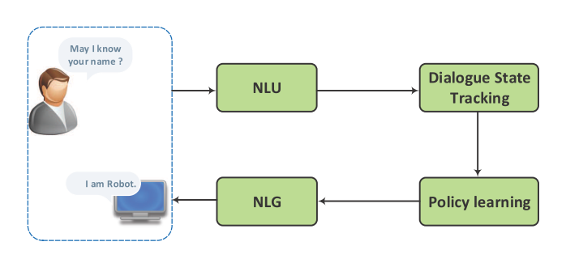
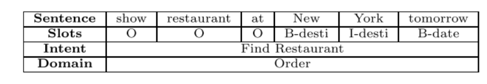
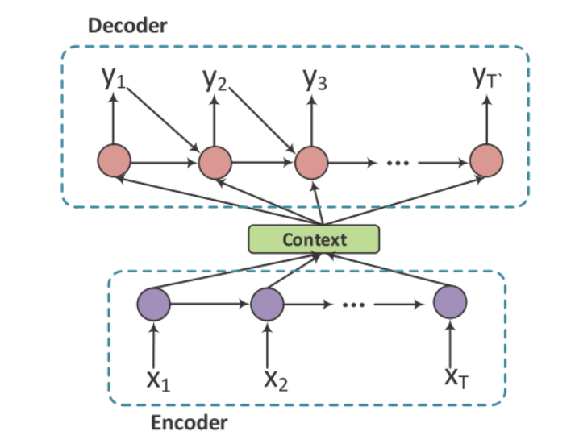
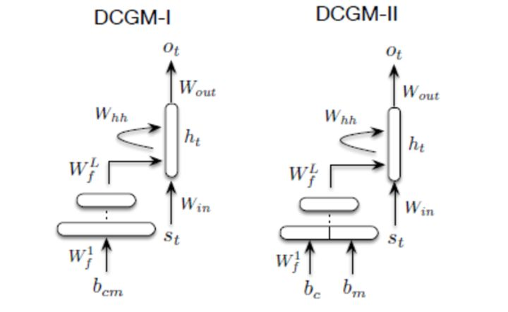
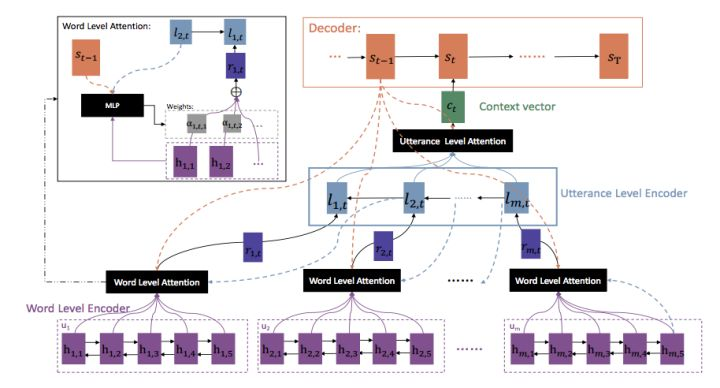
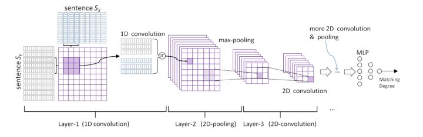

1. 概要
本文是阅读京东数据团队的论文《A Survey on Dialogue Systems:
Recent Advances and New Frontiers》以及微软亚洲研究院周明院长的演讲《自然语言对话引擎》的一些摘要。希望通过该论文首先对dialogue system的常用方法有一个了解。
对话系统大致分为两类：
（1）任务导向型（task-oriented)：完成特定工作（如找商品、订酒店等）
通常将dialogue response视为pipeline。

（2）非任务导向型（non-task-oriented）
主要有两种方法：
- 生成式方法：如seq2seq
- 检索式方法：从数据库中选择对话的回复
2. Task-oriented System
2.1 Pipeline method
如图示，pipeline由四部分构成
具体解析四个部分：
NLU
功能：将用户的表达解析为预定义的语义槽（semantic slots）
举例：

如上表就是一个语义槽，New York是槽值，槽中还确定了领域（domain）和意图（intent）。
表示方法分为两种：
- 句子级别的分类：如表示用户意图和句子种类
- 词级别的信息抽取：如命名实体识别和槽填充
意图检测
将一句话分类为预先设定的意图之一。文中主要提及了CNN方法。（个人理解CNN在分类问题上效果较好，用于意图检测也十分合理，毕竟也属于分类问题）
槽填充
槽填充通常被定义为序列标注问题（sequence labelling problems）。句子里的词语被标注上语义标签。该问题的输入是一系列单词组成的句子，输出是一个槽/概念索引（slot/concept IDS）的序列。文中主要提及了DBN（深度信念网络）的方法，比CRF(条件随机场)方法效果要好。当然序列问题肯定还有RNN的方法。
Dialogue State Tracking
功能：管理每一轮对话的输入与回复历史，输出当前的对话状态。具体来说，它会在每一次对话中估计用户的目标，对话状态表示到时间t为止的对话历史的表示。这种经典的状态结构通常被称为槽填充或者语义框架。
除了传统的人工特征，最近也提出了信念跟踪深度学习。它使用一个滑动窗口，输出任意数量的可能值的概率分布。它虽然是在某一特定领域训练的，但也很容易转移到新的领域。运用的比较多的模型有：
- multi-domain RNN dialog state tracking models:首先训练一个泛化模型，再针对特定领域进行专门化
- Neural Belief Tracker(NBT):用来检测槽值对。
Dialogue Policy Learning
以上一部分产生的状态作为条件，该部分产生下一个可用的系统动作。监督学习和强化学习都可以用来优化策略学习。强化学习的引入可以对对话策略进行一步的训练。效果超过了基于规则和监督的方法。
NLG
传统方法采用句子规划，将输入的语义符号映射为中间形式的表示，利用树状或模板结构，将中间结构通过表层实现转化为最终的回复。
几种深度学习的方法：
- 基于LSTM的结构。将对话行为类型和slot-value转化为one-hot控制向量，作为附加输入，确保生成的句子能够表达确定的意图。
- 使用一个正向RNN生成器，一个CNN重拍器和一个后向RNN重拍器。
- 利用对话行为类型来选择LSTM的输入向量
- 基于LSTM的encoder-decoder形式，将问题信息、语义槽值、对话行为类型结合起来生成正确答案。同时使用了注意力机制来处理解码器当前解码状态的关键信息。
- 基于seq2seq的自然语言生成器，可以被训练用于利用对话行为输入来产生自然语言和深度语法树。
2.2 端到端的方法
传统的流水线式方法存在两个问题：一是最终用户的反馈很难传递到上游模块。二是各部分之间相互依赖，使得难以优化。
端到端方法使用一个模块，并且与外部结构化数据进行交互。文中提到的方法有：
- 利用神经网络构建一个系统作为从对话历史到系统回复的映射，利用encoder-decoder训练整个系统。缺点是通过监督学习训练，需要大量数据，并且缺乏好的保持健壮性的策略。
- 一个端到端的强化学习系统，在对话管理中共同学习对话状态跟踪和对话策略学习。这种方法在用户脑海中想着名人的面向任务的提问有良好效果。
文中还提到了查询外部数据库的问题。传统的符号化查询存在两个问题：
- 检索不包含语义
- 检索不可导。因此分析器和对话策略需要分别训练。
文中针对这两个缺点提出了一些方法：
- 通过一个在知识库条目上可导的基于注意力的key-value检索机制来增强现有循环神经网络的结构。
- 将符号化询问替换为在知识库上的概率，该概率为表达哪些条目用户比较感兴趣的“软”后验概率。
- 将RNN与特定领域知识与系统回复模板相接合
1
J. D. Williams, K. Asadi, and G. Zweig. Hybrid code networks: practical and efficient end-to-end dialog control with supervised and reinforcement learning. In Proceedings of the 55th Annual Meeting of the Association for Computational Linguistics (Volume 1:Long Papers), pages 665–677, Vancouver, Canada,July 2017. Association for Computational Linguistics.
3. Non-Task-oriented Dialogue Systems
- 检索式：从语料库中为当前问题检索一个适当回复，具有更富有信息与流畅度的优势
- 生成式：可以产生于语料库中未出现过的回复
3.1 生成模型
文中主要介绍了seq2seq模型，并讨论了热门的研究课题，包括结合对话上下文、提高回复多样性、建模主题、利用外部数据库、交互式学习等。
3.1.1 seq2seq模型
给定一个包含T个词的原序列（消息）：
一个包含T’个词的目标序列（回复）
模型需要最大化条件概率：
特别地，seq2seq模型是一种encoder-decoder结构。如下图

编码器依次读入X个词，利用RNN将其表示为一个上下文向量c,解码器利用c作为输入估计生成Y的概率。RNN编码器计算上下文c可以写作：。
其中是t时刻的隐藏状态，f是一个非线性方程，如LSTM或GRU。c就是最后一个词的隐藏状态。解码器是一个标准的RNN语言模型，加上额外的条件上下文向量c，t时刻候选词的概率分布可计算为：
其中是RNN解码器t时刻的隐状态， 是t-1时刻回复的词。
seq2seq的目标函数被定义为：
3.1.2 对话上下文(Dialogue Context)
考虑对话的上下文信息的是构建对话系统的关键所在，它可以使对话保持连贯和增进用户体验。使用层次化的RNN模型，捕捉个体语句的意义，然后将其整合为完整的对话。同时，分别用字级别和句子级别的注意力方法扩展层次化的结构。试验证明：(1)层次化 RNNs的表现通常优于非层次化的RNNs；(2)在考虑上下文相关的信息后，神经网络趋向于产生更长的、更有意义和多样性的回复。
在下图中，作者通过代表整个对话历史(包括当前的信息)，用连续的表示或嵌入单词和短语来解决上下文敏感回复生成的这一难题。
1 | A neural network approach to context-sensitive generation of conversational responses. In Proceedings of the 2015 Conference of the North American Chapter of the Association for Computational Linguistics:Human Language Technologies, pages 196–205, Denver, Colorado,May–June 2015. Association for Computational Linguistics. |

在下图的结构中作者引入两个层次的Attention机制，让模型能够自动的学到词语与句子级别的重要度信息，从而更好的生成新一轮的对话。作者在句子级别的信息中，是反向学习的，即认为下一句的信息中更能够包含上一句的信息，所以从总体上来看，其对于对话的学习是逆向使用每一轮对话的内容的。
1 | C. Xing, W. Wu, Y. Wu, M. Zhou, Y. Huang,and W. Y. Ma. Hierarchical recurrent attention network for response generation. arXiv preprint arXiv:1701.07149, 2017. |

3.1.3 回复多样性
在当前的序列对话系统中，一个具有挑战性的问题是，它们倾向于产生意义不大的普通或不重要的、普适的回答，而这些回答往往涉及到“我不知道”或者“我很好”这样的高频率短语。这种行为可以归因于泛型回答往往有相对较高的频率，例如会话数据集中“我不知道”，而相反，有更多信息的回答相对稀疏。
目前提出的解决此类问题的办法：
- 寻找更好的目标函数
- 引入随机隐变量来产生更多不同的输出
- 消息本身可能也缺乏重放的足够信息，提出使用逐点互信息（PMI）来预测名词作为关键词，反映答复的主要依据，然后生成一个包含给定关键字的答复。
- 解码过程是冗余候选回复的另一个来源。通过引入了一个随机的beam-search程序或增加了一个用于beam-search评分的术语来惩罚搜索中同一父节点的同胞扩展。
3.1.4 主题和个性
显式地学习对话的内在属性是改善对话多样性和保持一致性的另一种方法。在不同的属性中，主题和个性被广泛探索。
人们经常把他们的对话与主题相关的概念联系起来，并根据这些概念创建他们的回复。使用Twitter的LDA模型来获得输入的主题，将主题信息和输入表示形式加入联合注意模块中，并产生与主题相关的回复，取得了不错的效果。
将情绪嵌入生成模型，并在困惑度中取得了良好的表现。
3.1.5 外部知识库
记忆网络是处理利用知识库完成问答任务的经典方法。
相关工作：
[1]在此之上做了尝试，并在开放域对话中取得了不错的成绩。
1 | [1] M. Ghazvininejad, C. Brockett, M.-W. Chang,B. Dolan, J. Gao, W.-t. Yih, and M. Galley. A knowledge-grounded neural conversation model. arXiv preprint arXiv:1702.01932, 2017. |
[2]也通过在多模态空间中进行CNN嵌入和RNN嵌入，在有背景知识下展开开放域对话，并在困惑度上取得了进步。根据外部知识产生一个问题的答案是一个类似的任务。与一般方法中在知识库中检索元组不同，
1 | [2]P. Vougiouklis, J. Hare, and E. Simperl. A neural net-work approach for knowledge-driven response gener-ation. In Proceedings of COLING 2016, the 26th In-ternational Conference on Computational Linguistics:Technical Papers, pages 3370–3380, Osaka, Japan, De-cember 2016. The COLING 2016 Organizing Committee. |
[3]将知识库中的词与生成过程中常见的词相结合。实证研究表明，所提出的模型能够通过参考知识库中的事实来产生自然而正确的答案。
1 | [3]J. Yin, X. Jiang, Z. Lu, L. Shang, H. Li, and X. Li.Neural generative question answering. In Proceedings of the Twenty-Fifth International Joint Conference on Artificial Intelligence, IJCAI’16, pages 2972–2978.AAAI Press, 2016. |
3.1.6 交互式对话学习
3.1.7 评价
评价生成回复的质量是对话系统的一个重要方面。任务导向型的对话系统可以基于人工生成的监督信号进行评估，例如任务完成测试或用户满意度评分等，然而，由于高回复的多样性，自动评估非任务导向的对话系统所产生的响应的质量仍然是一个悬而未决的问题。目前的方法有以下几种：
- 计算BLEU值，就是直接计算 word overlap、ground truth和你生成的回复。由于一句话可能存在多种回复，因此从某些方面来看，BLEU 可能不太适用于对话评测。
- 计算 embedding的距离，这类方法分三种情况：直接相加求平均、先取绝对值再求平均和贪婪匹配。
- 衡量多样性，主要取决于 distinct-ngram 的数量和 entropy 值的大小。
- 进行图灵测试，用 retrieval 的 discriminator 来评价回复生成。
3.2 检索模型
3.2.1 单轮回复匹配
目前比较新的方法如下图，利用深度卷积神经网络体系结构改进模型，学习消息和响应的表示，或直接学习两个句子的相互作用表示，然后用多层感知器来计算匹配的分数。

3.2.2 多轮回复匹配
在多轮回复的选择中，当前消息和之前的对话将被作为输入。模型会选择与整个文本最相关且自然的回复。这样，在之前的对话里识别重要信息、对对话的关系建立合适模型来保证对话一致性就变得十分重要。
多轮对话的难点在于不仅要考虑当前的问题，也要考虑前几轮的对话情景。多轮对话的难点主要有两点：1.如何明确上下文的关键信息（关键词，关键短语或关键句）；2.在上下文中如何模拟多轮对话间的关系。
目前提出的方法有：
- 通过RNN/LSTM的结构，编码了整个上下文（把之前所有的对话和当前用户的话拼接起来）和候选回复，作为上下文向量和回复向量，然后基于这两个向量计算匹配分数。
- 利用不同策略在之前出现的对话中选出一些话语，结合当前消息生成一个重组的上下文。
- 不仅仅在词级别上下文向量中进行上下文-回复匹配，而且还在句子级别的上下文向量中进行。
- 通过卷积神经网络，得到多种不同粒度的文本，然后在时序上利用循环神经网络进行累加，来建模句子之间的相关性。
3.2.3 关于检索方式引入外部知识的问题
这一点论文中没有提及，我在周明院长的讲话中看到了一些相关内容，整理进来。
短字符串匹配的时候太依赖于自己的信息了。而我们日常说话时往往是有背景、有常识的，我们说的每句话都有一个主题词表。怎么体现呢？首先找出输入语句的N个主题词，然后再找出可以回复的那些句子的主题词，用主题词来增强匹配的过程。这也是通过神经网络来算两个词串，再加上主题词增义的相似度。
具体算法实际上是通过Attention model（注意力模型）计算每个主题词跟当前这句话的匹配强度，所有主题词根据强度不同进行加权以体现当前背景主题词的强度，然后再和原句匹配在一起，来算相似度。
另外，我们也可以把主题词当成所谓的Knowledge base（知识图谱），通过主题词限定当前的输入应该有哪些信息可以输出，哪些信息不要输出，哪些信息应该补足，哪些信息可以直接使用等等。实际上在具体实现时可以看到一个句子有三种表示方法，两个句子之间每个句子都有三种表示方法，用两两表示方法计算距离最后就会得到一个矢量，再通过多层感知得到一个数值，来表征这两个输入串的距离。所以，这两个输入串不是赤裸裸地直接去匹配，而是用周围知识所代表的主题词来增强。
3.3.3 混合方法
结合生成方法和基于检索的方法可以显著提高性能。[4]和[5]尝试结合这两种方法。基于检索的系统通常可以给出一个精准但是不流利的方法，而基于生成的系统则倾向于给出一个流利但是没有什么意义的回复。在集成模型中，通过检索得到的候选回复，与原始消息一起送入基于RNN的回复生成器，再将最终的回复重排。这种方法结合了基于检索和生成的模型，得到了更加优秀的性能。[6]综合了自然语言生成，检索模型，包括基于模板的模型、词袋模型、seq2seq神经网络和隐变量神经网络，应用强化学习学习众包数据和真实世界用户的交互从而从集成模型中选择一个合适的回复。
1 | [4] Y. Song, R. Yan, X. Li, D. Zhao, and M. Zhang.Two are better than one: An ensemble of retrieval-and generation-based dialog systems. arXiv preprintarXiv:1610.07149, 2016. |